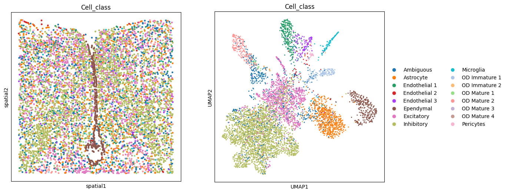
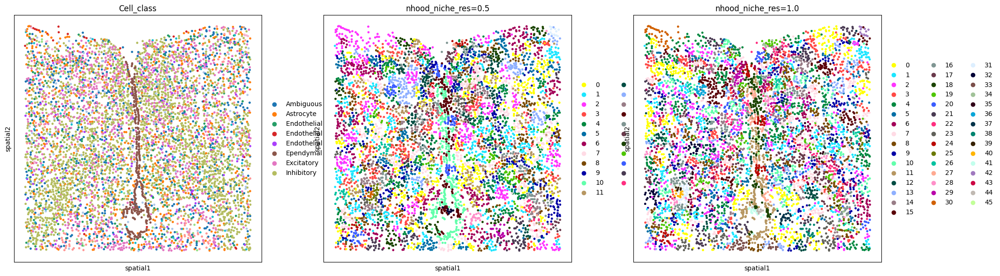
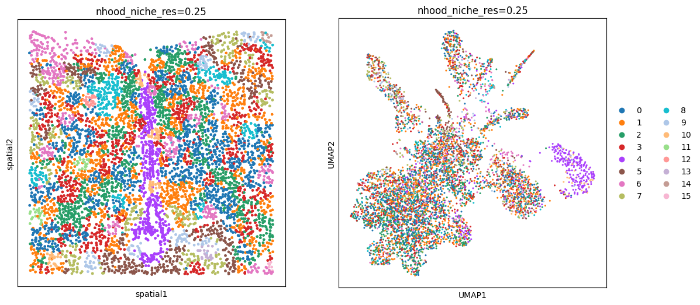
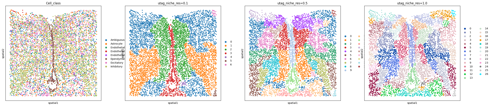
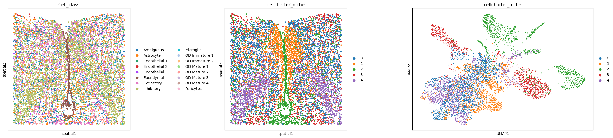
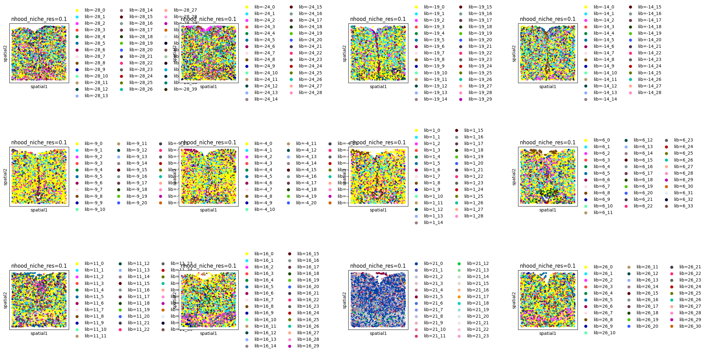
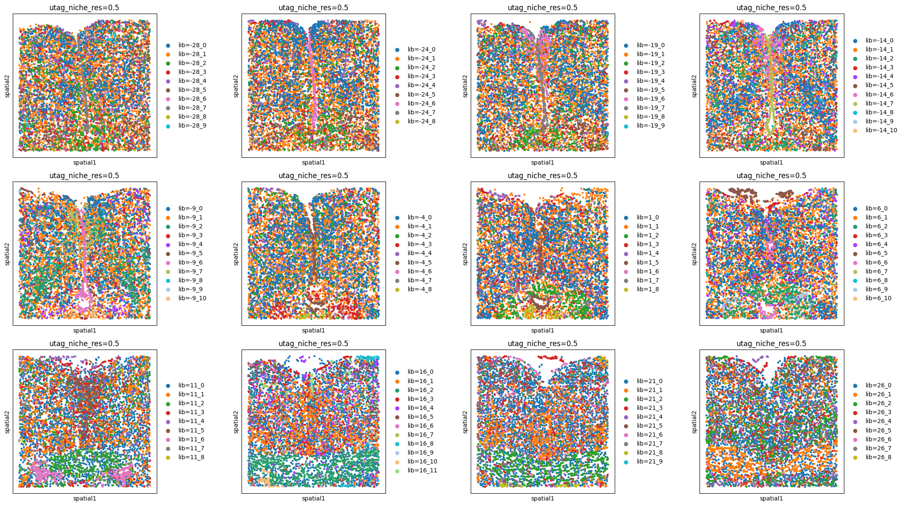

import squidpy as sq
import scanpy as sc
import pandas as pd
import matplotlib.pyplot as plt
/Users/francesca.drummer/miniconda3/envs/workshop_2025/lib/python3.12/site-packages/dask/dataframe/__init__.py:31: FutureWarning: The legacy Dask DataFrame implementation is deprecated and will be removed in a future version. Set the configuration option `dataframe.query-planning` to `True` or None to enable the new Dask Dataframe implementation and silence this warning.
warnings.warn(
/Users/francesca.drummer/miniconda3/envs/workshop_2025/lib/python3.12/site-packages/anndata/__init__.py:44: FutureWarning: Importing read_text from `anndata` is deprecated. Import anndata.io.read_text instead.
return module_get_attr_redirect(attr_name, deprecated_mapping=_DEPRECATED)
import warnings
warnings.filterwarnings("ignore")
%load_ext autoreload
%autoreload 2
%matplotlib inline
Example notebook demonstrating how to use the sq.gr.calculate_niche() method#
Let’s first get get some data#
load example data with cell type annotation:
adata = sq.datasets.merfish()
# the dataset contains multiple slides, we only use one for now
adata = adata[adata.obs.Bregma == -9]
# we'll use this later for plotting
sc.pp.neighbors(adata)
sc.tl.umap(adata)
adata
# the `Cell_class` column is the cell type annotation
AnnData object with n_obs × n_vars = 6185 × 161
obs: 'Cell_ID', 'Animal_ID', 'Animal_sex', 'Behavior', 'Bregma', 'Centroid_X', 'Centroid_Y', 'Cell_class', 'Neuron_cluster_ID', 'batch'
uns: 'Cell_class_colors', 'pca', 'neighbors', 'umap'
obsm: 'spatial', 'spatial3d', 'X_pca', 'X_umap'
varm: 'PCs'
obsp: 'distances', 'connectivities'
Every niche method requires a spatial neighborhood graph, which is why sq.gr.spatial_neighbors needs to be run first.
sq.gr.spatial_neighbors(adata, coord_type="generic", delaunay=False, n_neighs=20)
fig, axs = plt.subplots(ncols=2, nrows=1, figsize=(13, 6))
sq.pl.spatial_scatter(adata, color="Cell_class", shape=None, legend_loc=None, ax=axs[0])
sc.pl.umap(adata, color="Cell_class", ax=axs[1])
plt.tight_layout()
WARNING: Please specify a valid `library_id` or set it permanently in `adata.uns['spatial']`

<Figure size 640x480 with 0 Axes>
Neighborhood approach#
adapted from immunitastx/monkeybread
sq.gr.calculate_niche(
adata,
groups="Cell_class",
flavor="neighborhood",
n_neighbors=10,
resolutions=[0.5, 1.0],
)
adata
AnnData object with n_obs × n_vars = 6185 × 161
obs: 'Cell_ID', 'Animal_ID', 'Animal_sex', 'Behavior', 'Bregma', 'Centroid_X', 'Centroid_Y', 'Cell_class', 'Neuron_cluster_ID', 'batch', 'nhood_niche_res=0.5', 'nhood_niche_res=1.0'
uns: 'Cell_class_colors', 'pca', 'neighbors', 'umap', 'spatial_neighbors'
obsm: 'spatial', 'spatial3d', 'X_pca', 'X_umap'
varm: 'PCs'
obsp: 'distances', 'connectivities', 'spatial_connectivities', 'spatial_distances'
The niche result is now stored in adata.obs. One column per resolution is created, indicating the niche assignment.
adata.obs
| Cell_ID | Animal_ID | Animal_sex | Behavior | Bregma | Centroid_X | Centroid_Y | Cell_class | Neuron_cluster_ID | batch | nhood_niche_res=0.5 | nhood_niche_res=1.0 | |
|---|---|---|---|---|---|---|---|---|---|---|---|---|
| 41437-4 | 8c7df84c-8a53-4aa4-86fd-26e575de9b0e | 1 | Female | Naive | -9.0 | 1313.511887 | 2162.459959 | Microglia | nan | 4 | 2 | 30 |
| 41438-4 | 3617ee7c-c0a8-4f18-b9bd-c7ca737ff665 | 1 | Female | Naive | -9.0 | 1321.787911 | 2288.708578 | Astrocyte | nan | 4 | 2 | 4 |
| 41439-4 | f0d0277a-cac1-4181-8528-abfd9a5403c0 | 1 | Female | Naive | -9.0 | 1333.694106 | 2116.464893 | Astrocyte | nan | 4 | 2 | 30 |
| 41440-4 | 2dbbce4f-c54f-4df8-aced-590c971db48a | 1 | Female | Naive | -9.0 | 1339.956433 | 2200.067589 | Astrocyte | nan | 4 | 2 | 4 |
| 41441-4 | 74d3f69d-e8f2-4c33-a8ca-fac3eb65e55a | 1 | Female | Naive | -9.0 | 1340.563484 | 2251.463695 | Endothelial 1 | nan | 4 | 2 | 4 |
| ... | ... | ... | ... | ... | ... | ... | ... | ... | ... | ... | ... | ... |
| 47617-4 | 7a0e3ee6-aa12-4ed8-80ae-465e186caa3f | 1 | Female | Naive | -9.0 | 3060.524623 | 3700.928535 | Inhibitory | I-9 | 4 | 17 | 20 |
| 47618-4 | 6a2e534c-e94e-45d0-ae8b-a0459133d53b | 1 | Female | Naive | -9.0 | 3096.962169 | 3534.935314 | Inhibitory | I-18 | 4 | 9 | 6 |
| 47619-4 | 0e5b91a1-43f1-4821-8d36-ec587850de66 | 1 | Female | Naive | -9.0 | 2907.293885 | 3524.461287 | Ambiguous | nan | 4 | 14 | 16 |
| 47620-4 | cc5fb740-cdd3-4456-999e-ad433c68d350 | 1 | Female | Naive | -9.0 | 2908.555041 | 3568.968505 | Ambiguous | nan | 4 | 14 | 16 |
| 47621-4 | bf1b8cd7-76d3-4225-9ad9-751b2625987b | 1 | Female | Naive | -9.0 | 3097.514301 | 3736.664268 | Inhibitory | I-18 | 4 | 17 | 20 |
6185 rows × 12 columns
Visualize the result by comparing it to the cell type annotation:
sq.pl.spatial_scatter(
adata,
color=["Cell_class", "nhood_niche_res=0.5", "nhood_niche_res=1.0"],
shape=None,
figsize=(7, 7),
)
WARNING: Please specify a valid `library_id` or set it permanently in `adata.uns['spatial']`

This particular method allows us to use the distance and n_hop_weights parameters to control how we define the neighborhood. When distance is set to 1, the neighborhood is defined by the 1-hop neighbors. When distance is set to 2, the neighborhood is defined by the 2-hop neighbors, and so on. The n_hop_weights parameter is a list of weights for the different hop distances. When n_hop_weights is not provided, all hop distances are weighted equally.
sq.gr.calculate_niche(
adata,
groups="Cell_class",
flavor="neighborhood",
n_neighbors=10,
resolutions=0.25,
distance=3,
n_hop_weights=[1, 0.7, 0.25],
)
fig, axs = plt.subplots(ncols=2, nrows=1, figsize=(13, 6))
sq.pl.spatial_scatter(
adata, color="nhood_niche_res=0.25", shape=None, ax=axs[0], legend_loc=None
)
sc.pl.umap(adata, color="nhood_niche_res=0.25", ax=axs[1])
WARNING: Please specify a valid `library_id` or set it permanently in `adata.uns['spatial']`

UATG#
adapted from ElementoLab/utag
Next we follow the UTAG approach, which doesn’t require a previous annotation.
sq.gr.calculate_niche(adata, flavor="utag", n_neighbors=15, resolutions=[0.1, 0.5, 1.0])
adata.obs
| Cell_ID | Animal_ID | Animal_sex | Behavior | Bregma | Centroid_X | Centroid_Y | Cell_class | Neuron_cluster_ID | batch | nhood_niche_res=0.5 | nhood_niche_res=1.0 | nhood_niche_res=0.25 | utag_niche_res=0.1 | utag_niche_res=0.5 | utag_niche_res=1.0 | |
|---|---|---|---|---|---|---|---|---|---|---|---|---|---|---|---|---|
| 41437-4 | 8c7df84c-8a53-4aa4-86fd-26e575de9b0e | 1 | Female | Naive | -9.0 | 1313.511887 | 2162.459959 | Microglia | nan | 4 | 2 | 30 | 6 | 0 | 13 | 19 |
| 41438-4 | 3617ee7c-c0a8-4f18-b9bd-c7ca737ff665 | 1 | Female | Naive | -9.0 | 1321.787911 | 2288.708578 | Astrocyte | nan | 4 | 2 | 4 | 6 | 0 | 0 | 17 |
| 41439-4 | f0d0277a-cac1-4181-8528-abfd9a5403c0 | 1 | Female | Naive | -9.0 | 1333.694106 | 2116.464893 | Astrocyte | nan | 4 | 2 | 30 | 6 | 0 | 13 | 19 |
| 41440-4 | 2dbbce4f-c54f-4df8-aced-590c971db48a | 1 | Female | Naive | -9.0 | 1339.956433 | 2200.067589 | Astrocyte | nan | 4 | 2 | 4 | 6 | 0 | 13 | 19 |
| 41441-4 | 74d3f69d-e8f2-4c33-a8ca-fac3eb65e55a | 1 | Female | Naive | -9.0 | 1340.563484 | 2251.463695 | Endothelial 1 | nan | 4 | 2 | 4 | 6 | 0 | 13 | 19 |
| ... | ... | ... | ... | ... | ... | ... | ... | ... | ... | ... | ... | ... | ... | ... | ... | ... |
| 47617-4 | 7a0e3ee6-aa12-4ed8-80ae-465e186caa3f | 1 | Female | Naive | -9.0 | 3060.524623 | 3700.928535 | Inhibitory | I-9 | 4 | 17 | 20 | 1 | 1 | 5 | 5 |
| 47618-4 | 6a2e534c-e94e-45d0-ae8b-a0459133d53b | 1 | Female | Naive | -9.0 | 3096.962169 | 3534.935314 | Inhibitory | I-18 | 4 | 9 | 6 | 2 | 1 | 5 | 5 |
| 47619-4 | 0e5b91a1-43f1-4821-8d36-ec587850de66 | 1 | Female | Naive | -9.0 | 2907.293885 | 3524.461287 | Ambiguous | nan | 4 | 14 | 16 | 3 | 1 | 7 | 2 |
| 47620-4 | cc5fb740-cdd3-4456-999e-ad433c68d350 | 1 | Female | Naive | -9.0 | 2908.555041 | 3568.968505 | Ambiguous | nan | 4 | 14 | 16 | 3 | 1 | 7 | 2 |
| 47621-4 | bf1b8cd7-76d3-4225-9ad9-751b2625987b | 1 | Female | Naive | -9.0 | 3097.514301 | 3736.664268 | Inhibitory | I-18 | 4 | 17 | 20 | 1 | 1 | 5 | 5 |
6185 rows × 16 columns
Visualize the results:
sq.pl.spatial_scatter(
adata,
color=[
"Cell_class",
"utag_niche_res=0.1",
"utag_niche_res=0.5",
"utag_niche_res=1.0",
],
shape=None,
figsize=(7, 7),
)
WARNING: Please specify a valid `library_id` or set it permanently in `adata.uns['spatial']`

Cellcharter#
adapted from CSOgroup/cellcharter
For the Cellcharter approach, multiple neighborhood based matrices are aggregated, dimensionality reduced, then clustered. The advantage of this method is, it doesn’t require any annotation and we can decide the amount of niches we expect.
Here we choose 5 clusters and aggregate 3 n-hop neighbor matrices.
sq.gr.calculate_niche(adata, flavor="cellcharter", n_components=5, distance=3)
adata.obs
| Cell_ID | Animal_ID | Animal_sex | Behavior | Bregma | Centroid_X | Centroid_Y | Cell_class | Neuron_cluster_ID | batch | nhood_niche_res=0.5 | nhood_niche_res=1.0 | nhood_niche_res=0.25 | utag_niche_res=0.1 | utag_niche_res=0.5 | utag_niche_res=1.0 | cellcharter_niche | |
|---|---|---|---|---|---|---|---|---|---|---|---|---|---|---|---|---|---|
| 41437-4 | 8c7df84c-8a53-4aa4-86fd-26e575de9b0e | 1 | Female | Naive | -9.0 | 1313.511887 | 2162.459959 | Microglia | nan | 4 | 2 | 30 | 6 | 0 | 13 | 19 | 2 |
| 41438-4 | 3617ee7c-c0a8-4f18-b9bd-c7ca737ff665 | 1 | Female | Naive | -9.0 | 1321.787911 | 2288.708578 | Astrocyte | nan | 4 | 2 | 4 | 6 | 0 | 0 | 17 | 3 |
| 41439-4 | f0d0277a-cac1-4181-8528-abfd9a5403c0 | 1 | Female | Naive | -9.0 | 1333.694106 | 2116.464893 | Astrocyte | nan | 4 | 2 | 30 | 6 | 0 | 13 | 19 | 3 |
| 41440-4 | 2dbbce4f-c54f-4df8-aced-590c971db48a | 1 | Female | Naive | -9.0 | 1339.956433 | 2200.067589 | Astrocyte | nan | 4 | 2 | 4 | 6 | 0 | 13 | 19 | 3 |
| 41441-4 | 74d3f69d-e8f2-4c33-a8ca-fac3eb65e55a | 1 | Female | Naive | -9.0 | 1340.563484 | 2251.463695 | Endothelial 1 | nan | 4 | 2 | 4 | 6 | 0 | 13 | 19 | 2 |
| ... | ... | ... | ... | ... | ... | ... | ... | ... | ... | ... | ... | ... | ... | ... | ... | ... | ... |
| 47617-4 | 7a0e3ee6-aa12-4ed8-80ae-465e186caa3f | 1 | Female | Naive | -9.0 | 3060.524623 | 3700.928535 | Inhibitory | I-9 | 4 | 17 | 20 | 1 | 1 | 5 | 5 | 4 |
| 47618-4 | 6a2e534c-e94e-45d0-ae8b-a0459133d53b | 1 | Female | Naive | -9.0 | 3096.962169 | 3534.935314 | Inhibitory | I-18 | 4 | 9 | 6 | 2 | 1 | 5 | 5 | 0 |
| 47619-4 | 0e5b91a1-43f1-4821-8d36-ec587850de66 | 1 | Female | Naive | -9.0 | 2907.293885 | 3524.461287 | Ambiguous | nan | 4 | 14 | 16 | 3 | 1 | 7 | 2 | 4 |
| 47620-4 | cc5fb740-cdd3-4456-999e-ad433c68d350 | 1 | Female | Naive | -9.0 | 2908.555041 | 3568.968505 | Ambiguous | nan | 4 | 14 | 16 | 3 | 1 | 7 | 2 | 2 |
| 47621-4 | bf1b8cd7-76d3-4225-9ad9-751b2625987b | 1 | Female | Naive | -9.0 | 3097.514301 | 3736.664268 | Inhibitory | I-18 | 4 | 17 | 20 | 1 | 1 | 5 | 5 | 4 |
6185 rows × 17 columns
fig, axs = plt.subplots(ncols=3, nrows=1, figsize=(30, 6))
sq.pl.spatial_scatter(adata, color="Cell_class", shape=None, ax=axs[0])
sq.pl.spatial_scatter(adata, color="cellcharter_niche", shape=None, ax=axs[1])
sc.pl.umap(adata, color="cellcharter_niche", ax=axs[2])
plt.tight_layout()
WARNING: Please specify a valid `library_id` or set it permanently in `adata.uns['spatial']`
WARNING: Please specify a valid `library_id` or set it permanently in `adata.uns['spatial']`

<Figure size 640x480 with 0 Axes>
Using library_key#
Prepare the data#
import pandas as pd
adata_all = sq.datasets.merfish()
# prettify column we'll use as library_key
adata_all.obs["Bregma"] = adata_all.obs["Bregma"].astype(int)
adata_all.obs["Bregma"] = pd.Categorical(adata_all.obs["Bregma"])
sq.gr.spatial_neighbors(adata_all, coord_type="generic", delaunay=False, n_neighs=20)
Neighborhood approach#
sq.gr.calculate_niche(
adata_all,
groups="Cell_class",
flavor="neighborhood",
library_key="Bregma",
n_neighbors=20,
resolutions=0.1,
)
INFO Stratifying by library_key 'Bregma'
INFO Processing library '-28'
INFO Processing library '-24'
INFO Processing library '-19'
INFO Processing library '-14'
INFO Processing library '-9'
INFO Processing library '-4'
INFO Processing library '1'
INFO Processing library '6'
INFO Processing library '11'
INFO Processing library '16'
INFO Processing library '21'
INFO Processing library '26'
fig, axs = plt.subplots(ncols=4, nrows=3, figsize=(22, 12))
libraries = sorted(adata_all.obs["Bregma"].unique())
# like this instead of inside the spatial_scatter call due to the number of colors
for i, ax in enumerate(axs.flatten()):
adata_subset = adata_all[adata_all.obs["Bregma"] == libraries[i]]
sq.pl.spatial_scatter(
adata_subset, color="nhood_niche_res=0.1", shape=None,ax=ax
)
plt.tight_layout()
WARNING: Please specify a valid `library_id` or set it permanently in `adata.uns['spatial']`
WARNING: Please specify a valid `library_id` or set it permanently in `adata.uns['spatial']`
WARNING: Please specify a valid `library_id` or set it permanently in `adata.uns['spatial']`
WARNING: Please specify a valid `library_id` or set it permanently in `adata.uns['spatial']`
WARNING: Please specify a valid `library_id` or set it permanently in `adata.uns['spatial']`
WARNING: Please specify a valid `library_id` or set it permanently in `adata.uns['spatial']`
WARNING: Please specify a valid `library_id` or set it permanently in `adata.uns['spatial']`
WARNING: Please specify a valid `library_id` or set it permanently in `adata.uns['spatial']`
WARNING: Please specify a valid `library_id` or set it permanently in `adata.uns['spatial']`
WARNING: Please specify a valid `library_id` or set it permanently in `adata.uns['spatial']`
WARNING: Please specify a valid `library_id` or set it permanently in `adata.uns['spatial']`
WARNING: Please specify a valid `library_id` or set it permanently in `adata.uns['spatial']`

UTAG#
sq.gr.calculate_niche(
adata_all, flavor="utag", library_key="Bregma", n_neighbors=15, resolutions=0.5
)
INFO Stratifying by library_key 'Bregma'
INFO Processing library '-28'
INFO Processing library '-24'
INFO Processing library '-19'
INFO Processing library '-14'
INFO Processing library '-9'
INFO Processing library '-4'
INFO Processing library '1'
INFO Processing library '6'
INFO Processing library '11'
INFO Processing library '16'
INFO Processing library '21'
INFO Processing library '26'
fig, axs = plt.subplots(ncols=4, nrows=3, figsize=(22, 12))
libraries = sorted(adata_all.obs["Bregma"].unique())
# like this instead of inside the spatial_scatter call due to the number of colors
for i, ax in enumerate(axs.flatten()):
adata_subset = adata_all[adata_all.obs["Bregma"] == libraries[i]]
sq.pl.spatial_scatter(adata_subset, color="utag_niche_res=0.5", shape=None, ax=ax)
plt.tight_layout()
WARNING: Please specify a valid `library_id` or set it permanently in `adata.uns['spatial']`
WARNING: Please specify a valid `library_id` or set it permanently in `adata.uns['spatial']`
WARNING: Please specify a valid `library_id` or set it permanently in `adata.uns['spatial']`
WARNING: Please specify a valid `library_id` or set it permanently in `adata.uns['spatial']`
WARNING: Please specify a valid `library_id` or set it permanently in `adata.uns['spatial']`
WARNING: Please specify a valid `library_id` or set it permanently in `adata.uns['spatial']`
WARNING: Please specify a valid `library_id` or set it permanently in `adata.uns['spatial']`
WARNING: Please specify a valid `library_id` or set it permanently in `adata.uns['spatial']`
WARNING: Please specify a valid `library_id` or set it permanently in `adata.uns['spatial']`
WARNING: Please specify a valid `library_id` or set it permanently in `adata.uns['spatial']`
WARNING: Please specify a valid `library_id` or set it permanently in `adata.uns['spatial']`
WARNING: Please specify a valid `library_id` or set it permanently in `adata.uns['spatial']`
